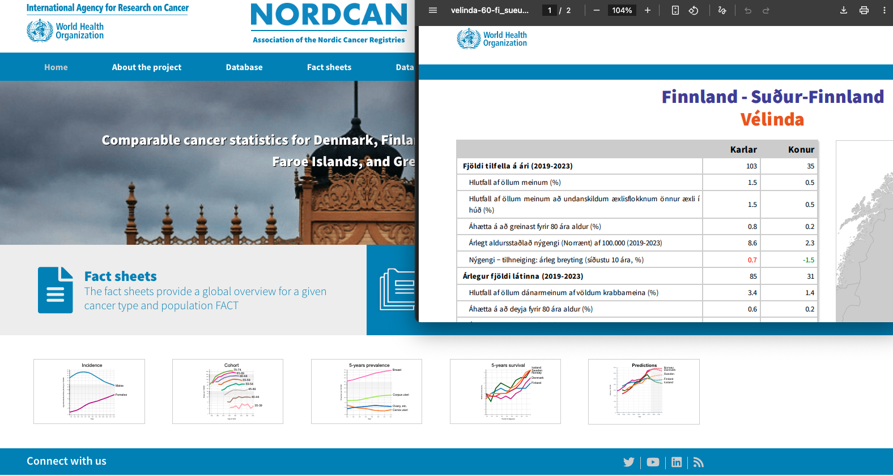
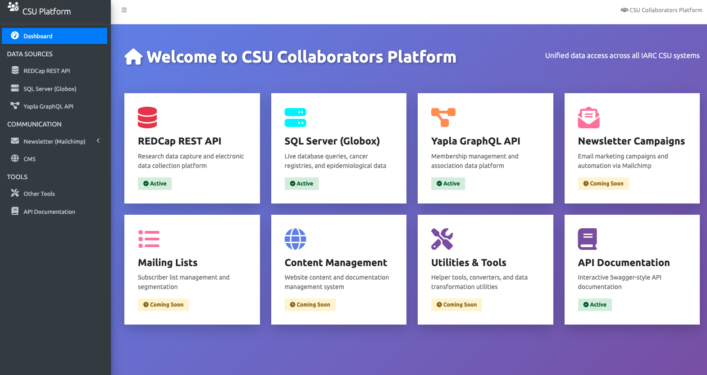
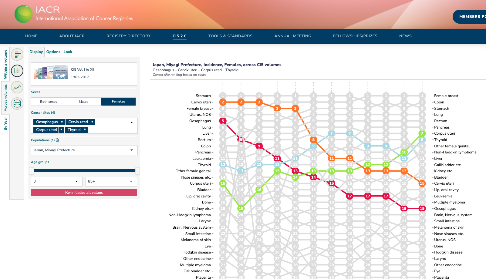

x<!doctype html>
<html lang="en">
	<head>
		<meta charset="utf-8">
		<meta name="viewport" content="width=device-width, initial-scale=1.0, maximum-scale=1.0, user-scalable=no">

		<title>GitHub Copilot Presentation</title>

		<link rel="stylesheet" href="dist/reset.css">
		<link rel="stylesheet" href="dist/reveal.css">
		<link rel="stylesheet" href="dist/theme/iarc.css">

		<!-- Theme used for syntax highlighted code -->
		<link rel="stylesheet" href="plugin/highlight/monokai.css">
		
		<style>
		.iarc-logo {
			position: fixed;
			bottom: 30px;
			left: 30px;
			z-index: 10;
		}			.balls-decoration {
				position: fixed;
				bottom: 30px;
				right: 30px;
				z-index: 10;
				opacity: 0;
				transition: opacity 0.3s;
			}
			
			body.transition-complete:not(.show-right-bg) .balls-decoration {
				opacity: 1;
			}
			
			/* Circle decoration for titles */
			.reveal .slides section h1::before,
			.reveal .slides section h2::before {
				content: '';
				display: inline-block;
				width: 36px;
				height: 36px;
				background-color: #f19c82;
				border-radius: 50%;
				margin-right: 15px;
				vertical-align: middle;
			}
			
			/* Alternating background images for slides */
			body::before {
				content: '';
				position: fixed;
				right: 0;
				top: 0;
				width: 550px;
				height: 100vh;
				background-image: url('images/right-bg.png');
				background-position: right center;
				background-repeat: no-repeat;
				background-size: cover;
				pointer-events: none;
				z-index: 0;
				opacity: 0;
				transition: opacity 0.3s;
			}
			
			body.show-right-bg::before {
				opacity: 1;
			}
			
			/* Mobile optimizations */
			@media screen and (max-width: 768px) {
				.iarc-logo {
					width: 70px;
					bottom: 10px;
				}
				
				.balls-decoration {
					width: 60px;
					bottom: 15px;
					right: 15px;
				}
				
				body::before {
					width: 200px;
				}
				
				.reveal .slides section h1::before,
				.reveal .slides section h2::before {
					width: 24px;
					height: 24px;
					margin-right: 10px;
				}
				
				.reveal h1 {
					font-size: 2.2em !important;
					margin-top: 20px !important;
				}
				
				.reveal h2 {
					font-size: 1.8em !important;
					margin-top: 20px !important;
				}
				
				.reveal h3 {
					font-size: 1.4em !important;
					margin-top: 20px !important;
				}
				
				.reveal p, .reveal ul, .reveal ol {
					font-size: 1.1em !important;
					margin-top: 15px !important;
				}
				
				.reveal li {
					margin-bottom: 10px !important;
				}
				
				.reveal pre code {
					font-size: 0.8em !important;
					padding: 10px !important;
				}
				
				.reveal .slides section {
					padding: 30px 25px 100px 25px !important;
					justify-content: flex-start !important;
				}
				
				/* Hide decorations on very small screens */
				body::before {
					display: none;
				}
			}
			
			@media screen and (max-width: 480px) {
				.iarc-logo {
					width: 60px;
					bottom: 8px;
				}
				
				.balls-decoration {
					width: 40px;
					bottom: 10px;
					right: 10px;
				}
				
				.reveal .slides section h1::before,
				.reveal .slides section h2::before {
					width: 20px;
					height: 20px;
					margin-right: 8px;
				}
				
				.reveal h1 {
					font-size: 1.8em !important;
					margin-top: 20px !important;
				}
				
				.reveal h2 {
					font-size: 1.5em !important;
					margin-top: 20px !important;
				}
				
				.reveal h3 {
					font-size: 1.2em !important;
					margin-top: 15px !important;
				}
				
				.reveal p, .reveal ul, .reveal ol {
					font-size: 1em !important;
					margin-top: 12px !important;
				}
				
				.reveal li {
					margin-bottom: 8px !important;
				}
				
				.reveal pre code {
					font-size: 0.7em !important;
					padding: 8px !important;
				}
				
				.reveal .slides section {
					padding: 25px 20px 90px 20px !important;
					justify-content: flex-start !important;
				}
			}
			
			/* Touch-friendly controls */
			.reveal .controls {
				bottom: 20px !important;
				right: 20px !important;
			}
			
			@media screen and (max-width: 768px) {
				.reveal .controls {
					bottom: 10px !important;
					right: 10px !important;
				}
				
				.reveal .controls button {
					width: 40px !important;
					height: 40px !important;
				}
			}
			
			/* Improve readability on mobile */
			.reveal ul, .reveal ol {
				width: 100%;
			}
			
			.reveal li {
				line-height: 1.6 !important;
			}

		/* Video fullscreen modal */
		.video-modal {
			display: none;
			position: fixed;
			top: 0;
			left: 0;
			width: 100vw;
			height: 100vh;
			background: rgba(0, 0, 0, 0.95);
			z-index: 9999;
			justify-content: center;
			align-items: center;
		}
		
		.video-modal.active {
			display: flex;
		}
		
		.video-modal video {
			width: 90%;
			max-height: 90vh;
			border-radius: 8px;
			object-fit: contain;
		}
		
		.video-modal-close {
			position: absolute;
			top: 20px;
			right: 20px;
			color: white;
			font-size: 50px;
			cursor: pointer;
			background: rgba(0, 0, 0, 0.7);
			border: 3px solid white;
			border-radius: 50%;
			width: 70px;
			height: 70px;
			display: flex;
			align-items: center;
			justify-content: center;
			z-index: 10000;
			transition: all 0.3s;
			line-height: 1;
			padding: 0;
		}
		
		.video-modal-close:hover {
			background: rgba(255, 255, 255, 0.3);
			transform: scale(1.1);
		}
		
		.reveal video {
			cursor: pointer;
		}
		
		/* Hide balls on "How It Works" slide (slide index 2) */
		body[data-slide="2"] .balls-decoration {
			display: none !important;
		}
		
		/* Screenshots with higher z-index */
		.reveal img[src*="screenshot"] {
			position: relative;
			z-index: 100;
		}
	</style>
	</head>
	<body>
		<!-- Video Modal -->
		<div class="video-modal" id="videoModal">
			<button class="video-modal-close" onclick="closeVideoModal()">×</button>
			<video id="modalVideo" autoplay loop muted playsinline controls>
				<source src="https://videos.ctfassets.net/8aevphvgewt8/5R57iyx96ENtWp4nOHBsAl/f935b264e79099bd8ed54e2d74db7ab5/hero-animation-lg.mp4" type="video/mp4">
			</video>
		</div>
		
		<div class="reveal">
			<!-- IARC Logo -->
			
			<!-- Balls decoration for even slides -->
			
			
			<div class="slides">
				<!-- Markdown content -->
			<section data-markdown>
				<textarea data-template>
					# GitHub Copilot
					### AI-Powered Code Assistant
					
					

					<p align="center" style=" width: 100%; display: block; text-align: center;"><a href="https://github.com/features/copilot">https://github.com/features/copilot</a></p>

					---
					
					## What is GitHub Copilot?
					
					- AI pair programmer
					- Powered by OpenAI
					- Suggests code in real-time
					- Works in your IDE (Visual Studio Code)
							
					---
					
					## How It Works
					
					- Write a comment describing what you want
					- Copilot suggests code
					- Accept, reject, or modify suggestions
					- 3 modes : ask, edit, agent

					<video autoplay loop muted playsinline style="width: 38%; max-height: 70vh; border-radius: 8px; object-fit: contain;    position: absolute; right: 300px; top: 175px;">
						<source src="https://videos.ctfassets.net/8aevphvgewt8/5R57iyx96ENtWp4nOHBsAl/f935b264e79099bd8ed54e2d74db7ab5/hero-animation-lg.mp4" type="video/mp4">
					</video>
				</textarea>
			</section>
			
			<!-- Benefits Section -->
			<section data-markdown>
				<textarea data-template>
					## Benefits
					
					- **Increased Productivity** - Write code faster
					- **Learn as You Go** - See different approaches
					- **Discover APIs** - Find the right functions
				</textarea>
			</section>					<!-- Use Cases Section with Vertical Sub-slides -->
					<section>
						<!-- Main Use Cases Slide -->
						<section data-markdown>
							<textarea data-template>
								## Use Cases
								- Website Translation
							</textarea>
						</section>
						
					<!-- Sub-slide 1: Website Translation -->
					<section data-markdown>
						<textarea data-template>
							
						</textarea>
					</section>						<!-- Main Use Cases Slide -->
						<section data-markdown>
							<textarea data-template>
								## Use Cases
								- Website Translation
								- Platform Revamp
							</textarea>
						</section>
						
					<!-- Sub-slide 2: Data Visualization -->
					<section data-markdown>
						<textarea data-template>
							
						</textarea>
					</section>						<!-- Main Use Cases Slide -->
						<section data-markdown>
							<textarea data-template>
								## Use Cases
								- Website Translation
								- Platform Revamp
								- Data Visualization Library
							</textarea>
						</section>
						
					<!-- Sub-slide 3: Platform Revamp -->
					<section data-markdown>
						<textarea data-template>
							
						</textarea>
					</section>
						<!-- Main Use Cases Slide -->	
						<section data-markdown>
							<textarea data-template>
								## Use Cases
								- Website Translation
								- Data Visualization Library
								- Platform Revamp
								- Code Refactoring
								- Documentation
							</textarea>
						</section>
					</section>
					
					<!-- Continue with remaining sections -->
					<section data-markdown>
						<textarea data-template>
							## Limitations
							
							- May suggest incorrect code
							- Requires code review
							- Works best with common patterns
							- Privacy considerations						
							---
							
							## Pricing
							
							- **Individual**: $10/month or $100/year
							- **Business**: $19/user/month
							- **Free for students and open source maintainers**
							
							---
							
							## Resources
							
							- [copilot.github.com](https://copilot.github.com)
							- [VS Code Extension](https://marketplace.visualstudio.com/items?itemName=GitHub.copilot)
							- [Documentation](https://docs.github.com/en/copilot)
							- [Best Practices Guide](https://github.blog/tag/github-copilot/)
							
							---
							
							## Demo Time
							
							Let's see GitHub Copilot in action!
							
						</textarea>
					</section>
				</div>
			</div>
		</div>

		<script src="dist/reveal.js"></script>
		<script src="plugin/notes/notes.js"></script>
		<script src="plugin/markdown/markdown.js"></script>
		<script src="plugin/highlight/highlight.js"></script>
		<script>
			// More info about initialization & config:
			// - https://revealjs.com/initialization/
			// - https://revealjs.com/config/
			Reveal.initialize({
				hash: true,
				
				// Mobile optimizations
				touch: true,
				controls: true,
				progress: true,
				center: false,
				
				// Enable touch navigation
				respondToHashChanges: true,
				
				// Better mobile performance
				embedded: false,
				autoSlide: 0,
				
				// Improved touch gestures
				touchEnabled: true,
				
				// Better scaling on mobile
				width: '100%',
				height: '100%',
				margin: 0.04,
				minScale: 0.2,
				maxScale: 2.0,

				// Learn about plugins: https://revealjs.com/plugins/
				plugins: [ RevealMarkdown, RevealHighlight, RevealNotes ]
			});
			
		// Toggle right-bg.png on even slides
		Reveal.on('slidechanged', event => {
			const slideNumber = event.indexh + 1;
			document.body.setAttribute('data-slide', event.indexh);
			if (slideNumber % 2 === 0) {
				document.body.classList.add('show-right-bg');
			} else {
			document.body.classList.remove('show-right-bg');
		}
	});			// Set initial state
		Reveal.on('ready', event => {
			const slideNumber = event.indexh + 1;
			document.body.setAttribute('data-slide', event.indexh);
			if (slideNumber % 2 === 0) {
				document.body.classList.add('show-right-bg');
			}
			
			// Check initial slide for balls decoration
			const ballsDecoration = document.querySelector('.balls-decoration');
			if (ballsDecoration && event.indexh === 2 && event.indexv === 0) {
				ballsDecoration.style.display = 'none';
			}
		});			// Show balls.png after slide transition ends (but not on vertical slides)
			Reveal.on('slidetransitionend', event => {
				const indices = Reveal.getIndices();
				// Hide balls on vertical slides (indexv > 0)
				if (indices.v === 0) {
					document.body.classList.add('transition-complete');
				} else {
					document.body.classList.remove('transition-complete');
				}
			});
			
		// Hide balls.png when transition starts
		Reveal.on('slidechanged', event => {
			document.body.classList.remove('transition-complete');
			
			// Hide balls on "How It Works" slide (slide 2)
			const ballsDecoration = document.querySelector('.balls-decoration');
			if (ballsDecoration) {
				if (event.indexh === 2 && event.indexv === 0) {
					ballsDecoration.style.display = 'none';
				} else {
					ballsDecoration.style.display = '';
				}
			}
		});
		
		// Video modal functionality
		function openVideoModal() {
			const modal = document.getElementById('videoModal');
			const modalVideo = document.getElementById('modalVideo');
			modal.classList.add('active');
			modalVideo.play();
		}
		
		function closeVideoModal() {
			const modal = document.getElementById('videoModal');
			const modalVideo = document.getElementById('modalVideo');
			modal.classList.remove('active');
			modalVideo.pause();
		}
		
		// Add click handler to inline video
		setTimeout(() => {
			const inlineVideo = document.querySelector('.reveal video');
			if (inlineVideo) {
				inlineVideo.addEventListener('click', openVideoModal);
			}
		}, 1000);
		
		// Close modal on background click
		document.getElementById('videoModal').addEventListener('click', function(e) {
			if (e.target === this) {
				closeVideoModal();
			}
		});
	</script>
</body>
</html>